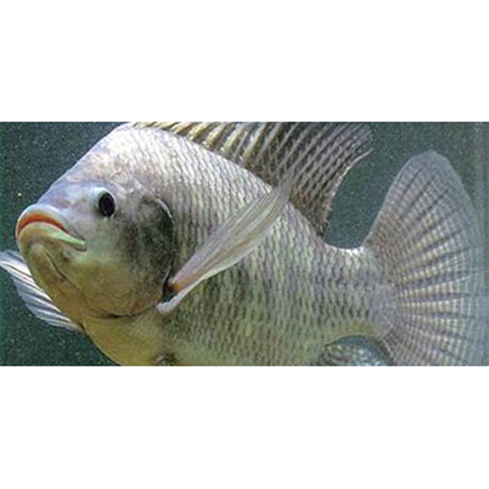

Ikan Nila
Ikan Nila Salin atau lebih dikenal dengan nama Nila Srikandi adalah strain ikan nila unggul hasil persilangan antara ikan nila hitam nirwana betina dan ikan nila biru jantan. Adalah para peneliti Badan Pengkajian dan Penerapan Teknologi (BPPT) yang berhasil membuat ikan ini tahan dan kini banyak di budidayakan di air payau. Kelebihan dari hasil rekayasa ini antara lain, toleran salinitas tinggi, pertumbuhan cepat, rasa lebih enak, dapat dipolikultur dg vanamei dan penghematan pakan (pada budidaya).
Ikan nila memiliki bentuk badan pipih kesamping memanjang dengan garis-garis pada sirip ekor berwana merah sejumlah 6-12 buah, pada sirip pungung terdapat garis-garis miring, mata tampak menonjol & besar, tepi mata berwarna putih, mempunyai garis vertikal sepanjang tubuh 9-11 buah. Ciri khas ikan nila adalah garis-garis vertikal berwarna hitam pada sirip ekor, punggung dan dubur. Selain itu juga memiliki karakteristik sebagai ikan parental care yang merawat anaknya dengan menggunakan mulut (mouth breeder).
Kandungan Ikan Nila
| Protein (%) | Kalori (Kal) | Lemak (%) | Besi (mg) | Kalsium (mg) | Fosfor (mg) | Vit A (SI) | Vit B1 (mg) | Air (%) | BDD (%) |
|---|---|---|---|---|---|---|---|---|---|
| 26 | 128 | 3 | - | - | 204,00 | - | - | - | - |
Manfaat Ikan Nila
- Mencerdaskan otak
- Meningkatkan kesehatan tulang
- Menjaga kesehatan gigi
- Meningkatkan kecerdasan kognitif
- Sebagai antioksidan
- Mencegah penuaan dini
- Menjaga kesehatan jantung
- Mengurangi resiko BPH atau kanker prostat
- Cocok untuk progam diet
Kandungan omega 3 pada ikan nila ini juga berperan penting dalam meningkatkan kesehatan sel sel otak, sehingga membantu tingkat perkembangan kecerdasan anak. Selain omega 3, ikan nila juga mengandung kalium. Yang mana kalium ini berperan penting dalam meningkatkan sirkulasi oksigenasi pada otak.
Ikan nila juga mengandung fosfor yang membantu menjaga kesehatan tulang. Kebutuhan fosfor yang tercukupi akan meminimalkan resiko terjadinya osteoporosis.
Selain menjaga dan menguatkan tulang, fosfor juga membantu menjaga kekuatan dan kesehatan gigi. Fosfor menguatkan dan mencegah agar gigi tidak rapuh dan berlubang.
Walaupun tidak setinggi jenis ikan yang lain, namun kalium yang terkandung dalam ikan tuna ini juga bermanfaat untuk meningkatkan kemampuan kognitif.
Jangan kaget, kalau ternyata ikan nila ini juga mempunyai kandungan antioksidan seperti halnya sayur dan buah. Walaupun tidak sebesar kandungan antioksidan sayur sayuran dan buah buahan, namun kandungan ikan nila ini sudah cukup untuk menangkal radikal bebas.
Dengan mengkonsumsi ikan nila secara rutin, akan mencukupi asupan selenium yang mana berfungsi untuk menjaga kesehatan kulit. Selainitu selenium dan kandungan antioksidan pada nila juga bermanfaat untuk menjaga kerusakan sel dari radikal bebas.
Asam lemak omega 3 iki akan membantu menurunkan resiko serangan jantung, ateroslerosis bahkan stroke. Selain itu kalium yang terkandung dalamikan nila juga sangat bermanfaat untuk kesehatan jantung. Kalium ini berfungsi untuk menstabilkan tekanandarah.
Selenium yang terkandung dalam ikan nila ini juga bermanfaat sekali untuk mencegah serta mengurangi resiko terkena kanker prostat. Selenium berfungsi untuk mencegah radikal bebas tersebar pada tubuh.
Ikan nila ini rendah kalori dan juga rendah lemak, sehingga sangat cocok untuk sobat yang sedang menjalani progam diet.